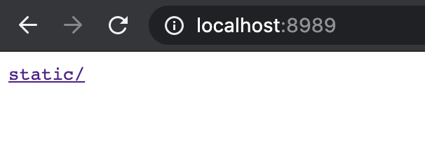
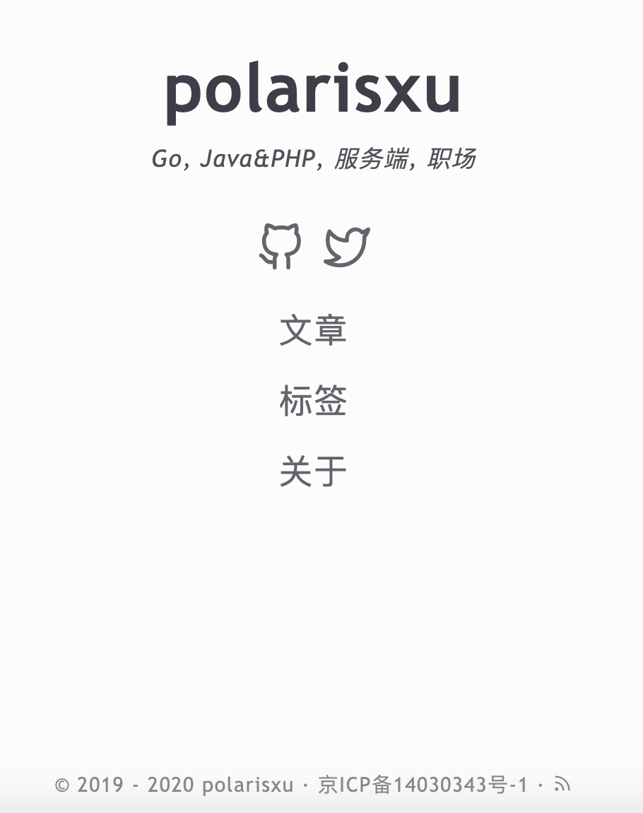

提前试用将在 Go1.16 中发布的内嵌静态资源功能
大家好，我是站长 polarisxu。
喜欢 Go 语言有很多理由，其中有一点“因为编译为一个二进制文件，直接运行，没有其他依赖，使得部署特别容易。”我想是很多人喜欢的。
然而一个项目，很可能会包含一些静态资源文件，这样一来，一个 Go 二进制文件就不能解决了，需要将静态资源文件一起带上。于是有了很多第三方解决方案，将静态资源文件“嵌入”最终的 Go 二进制文件中。最知名的应该是 go-bindata ，此外还有很多其他的：
- github.com/alecthomas/gobundle
- github.com/GeertJohan/go.rice
- github.com/go-playground/statics
- github.com/gobuffalo/packr
- github.com/knadh/stuffbin
- github.com/mjibson/esc
- github.com/omeid/go-resources
- github.com/phogolabs/parcello
- github.com/pyros2097/go-embed
- github.com/rakyll/statik
- github.com/shurcooL/vfsgen
- github.com/UnnoTed/fileb0x
- github.com/wlbr/templify
- perkeep.org/pkg/fileembed
从这个列表足以看出需求的广泛性。于是官方决定提供实现，在 go 命令中实现该功能。因为在 Go 命令中添加对嵌入基本功能的直接支持将消除对某些工具的需求，至少可以简化其他工具的实现。
2020 年 10 月 30 日，Russ Cox 提交了最终的实现：[cmd/go: add //go:embed support](cmd/go: add //go:embed support)，意味着你在 tip 版本可以试用该功能了。Go1.16 版本会包含该功能。欢迎大家试用，反馈建议。
01 试用 go embed
通过几个示例快速了解 go embed 的用法。
例 1：内嵌文件 — Web 应用
基于 Echo 框架：
package main
import (
_ "embed"
"net/http"
"github.com/labstack/echo"
)
//go:embed static/logo.png
var content []byte
func main() {
e := echo.New()
e.GET("/", func(c echo.Context) error {
return c.Blob(http.StatusOK, "image/png", content)
})
e.Logger.Fatal(e.Start(":8989"))
}
目录结构如下：
.
├── main.go
└── static
└── logo.png
编译运行后，可以将二进制文件移到任何地方运行，浏览器访问 http://localhhost:8989，能够正确显示 logo 图片表示成功了。
基于 Gin 框架，代码类似：
package main
import (
_ "embed"
"net/http"
"github.com/gin-gonic/gin"
)
//go:embed static/logo.png
var content []byte
func main() {
router := gin.Default()
router.GET("/", func(ctx *gin.Context) {
ctx.Data(http.StatusOK, "image/png", content)
})
router.Run(":8989")
}
直接使用 net/http 库，代码如下：
package main
import (
_ "embed"
"log"
"net/http"
"fmt"
)
//go:embed static/logo.png
var content []byte
func main() {
http.HandleFunc("/", func(w http.ResponseWriter, r *http.Request) {
w.Header().Add("Content-Type", "image/png")
w.WriteHeader(http.StatusOK)
fmt.Fprintf(w, "%s", content)
})
log.Fatal(http.ListenAndServe(":8989", nil))
}
例 2：内嵌文件 — 命令行应用
简单的 Hello World：
package main
import (
_ "embed"
"fmt"
)
//go:embed message.txt
var message string
func main() {
fmt.Println(message)
}
其中 messaeg.txt 中的内容是 Hello World。目录结构如下：
.
├── main.go
└── message.txt
编译后，可以将二进制移到任何地方，运行输出 Hello World（即 messaeg.txt 中的内容）。
例 3：内嵌目录 - 命令行应用
以下程序将 static 目录内嵌到二进制程序中，然后在当前目录创建 static 目录中的所有文件。
package main
import (
"embed"
"io"
"log"
"os"
"path"
)
//go:embed static
var local embed.FS
func main() {
fis, err := local.ReadDir("static")
if err != nil {
log.Fatal(err)
}
for _, fi := range fis {
in, err := local.Open(path.Join("static", fi.Name()))
if err != nil {
log.Fatal(err)
}
out, err := os.Create("embed-" + path.Base(fi.Name()))
if err != nil {
log.Fatal(err)
}
io.Copy(out, in)
out.Close()
in.Close()
log.Println("exported", "embed-"+path.Base(fi.Name()))
}
}
该示例的目录结构和例 1 一样。编译后，可以将二进制文件移到任何地方，运行后，会在当前目录输出以 embed- 开头的文件。
例 4：内嵌目录 — Web 应用
基于 Echo 框架：
package main
import (
"embed"
"net/http"
"github.com/labstack/echo/v4"
)
//go:embed static
var local embed.FS
func main() {
e := echo.New()
e.GET("/*", echo.WrapHandler(http.FileServer(http.FS(local))))
e.Logger.Fatal(e.Start(":8989"))
}
同样，目录结构和 example1 一致。编译后运行，访问 http://localhost:8989，看到如下界面：

注意上面使用的是 /*，如果直接使用 /，点击链接会是 404。
换成 Gin，代码如下：
package main
import (
"embed"
"net/http"
"github.com/gin-gonic/gin"
)
//go:embed static/*
var local embed.FS
func main() {
router := gin.Default()
router.GET("/*filepath", gin.WrapH(http.FileServer(http.FS(local))))
router.Run(":8989")
}
结果和 Echo 框架一样。同样要注意是 /*filepath，不能是 /。
换成标准库 net/http 试试？
package main
import (
"embed"
"log"
"net/http"
)
//go:embed static
var local embed.FS
func main() {
http.Handle("/", http.FileServer(http.FS(local)))
log.Fatal(http.ListenAndServe(":8989", nil))
}
标准库中 / 会自动处理所有的请求。
02 //go:embed 指令
之前第三方的现实，基本是基于 go generate，将静态资源文件生成 go 源文件，最后编译进二进制文件中。官方的实现，通过 //go:embed 指令，在编译时将静态资源嵌入二进制文件中。然后，Go 通过标准库，让用户能够访问这些内嵌的资源。因此，先介绍下 //go:embed 指令的用法。
相关规则
在变量声明上方，通过 //go:embed 指令指定一个或多个符合 path.Match 模式的要嵌入的文件或目录。相关规则或使用注意如下：
1）跟其他指令一样，// 和 go:embed 之间不能有空格。（不会报错，但该指令会被编译器忽略）
2）指令和变量声明之间可以有空行或普通注释，不能有其他语句；
//go:embed message.txt
var message string
以上代码是允许的，不过建议紧挨着，而且建议变量声明和指令之间也别加注释，注释应该放在指令上方。
3）变量的类型只能是 string、[]byte 或 embed.FS，即使是这三个类型的别名也不行；
type mystring = string
//go:embed hello.txt
var message mystring // 编译不通过：go:embed cannot apply to var of type mystring
4）允许有多个 //go:embed 指令。多个文件或目录可以通过空格分隔，也可以写多个指令。比如：
//go:embed image template
//go:embed html/index.html
var content embed.FS
5）文件或目录使用的是相对路径，相对于指令所在 Go 源文件所在的目录，路径分隔符永远使用 /；当文件或目录名包含空格时，可以使用双引号或反引号括起来。
6）对于目录，会以该目录为根，递归的方式嵌入所有文件和子目录；
7）变量的声明可以是导出或非导出的；可以是全局也可以在函数内部；但只能是声明，不能给初始化值；
//go:embed message.txt
var message string = "" // 编译不通过：go:embed cannot apply to var with initializer
8）只能内嵌模块内的文件，比如 .git/* 或软链接文件无法匹配；空目录会被忽略；
9）模式不能包含 . 或 ..，也不能以 / 开始，如果要匹配当前目录所有文件，应该使用 * 而不是 .；
03 标准库
和 embed 相关的标准库有 5 个，其中 2 个是新增的：embed 和 io/fs；net/http，text/template 和 html/template 包依赖 io/fs 包，而 embed.FS 类型实现了 io/fs 包的 FS 接口，因此这 3 个包可以使用 embed.FS。（Go1.16 发布时可能还会增加其他包或修改一些包的内容）
io/fs 包
该包定义了文件系统的基本接口。文件系统既可以由主机操作系统提供，也可以由其他包提供。本文我们主要介绍和 embed 密切相关的内容。
先看 FS 接口：
type FS interface {
// Open opens the named file.
//
// When Open returns an error, it should be of type *PathError
// with the Op field set to "open", the Path field set to name,
// and the Err field describing the problem.
//
// Open should reject attempts to open names that do not satisfy
// ValidPath(name), returning a *PathError with Err set to
// ErrInvalid or ErrNotExist.
Open(name string) (File, error)
}
FS 提供对分层文件系统的访问。像操作系统使用的文件系统就是一种分层文件系统。
FS 接口是文件系统所需的最小实现。文件系统可以实现其他接口，比如 fs.ReadFileFS，以提供其他或优化的功能。
File 接口：
type File interface {
Stat() (FileInfo, error)
Read([]byte) (int, error)
Close() error
}
该接口定义对单个文件的访问。这是文件的最小实现要求。文件可以实现其他接口，例如 fs.ReadDirFile，io.ReaderAt 或 io.Seeker，以提供其他或优化的功能。
因为有了 FS、File 等的接口抽象，之前在 os 包中的一些内容移到了 io/fs 包中，比如 fs.FileInfo 接口、fs.FileMode 类型，os 中原有的定义改成了它们的别名。
DirEntry 接口：
type DirEntry interface {
// Name returns the name of the file (or subdirectory) described by the entry.
// This name is only the final element of the path (the base name), not the entire path.
// For example, Name would return "hello.go" not "/home/gopher/hello.go".
Name() string
// IsDir reports whether the entry describes a directory.
IsDir() bool
// Type returns the type bits for the entry.
// The type bits are a subset of the usual FileMode bits, those returned by the FileMode.Type method.
Type() FileMode
// Info returns the FileInfo for the file or subdirectory described by the entry.
// The returned FileInfo may be from the time of the original directory read
// or from the time of the call to Info. If the file has been removed or renamed
// since the directory read, Info may return an error satisfying errors.Is(err, ErrNotExist).
// If the entry denotes a symbolic link, Info reports the information about the link itself,
// not the link's target.
Info() (FileInfo, error)
}
DirEntry 是从目录读取的条目（使用 ReadDir 函数或 ReadDirFile 的 ReadDir方法）。比如下面 embed 包中的 embed.FS 有一个方法 ReadDir 就返回了 DirEntry 类型的切片。这样可以遍历 embed.FS 这个文件系统。
embed 包
资源文件嵌入 Go 二进制程序后，我们通过 embed 包可以访问它们。
string 和 []byte
当指令用于 string 或 []byte 时，只能有一个模式，匹配一个文件，字符串或 []byte 的内容是该文件的内容。这时虽然不需要使用 embed 包，但必须导入，因此采用空导入：
import _ "embed"
FS（File System）
一般内嵌单个文件，采用 string 或 []byte 是最好的选择；但内嵌很多文件或目录树，应该使用 embed.FS 类型，这也是该包目前唯一的类型。
type FS struct {
// The compiler knows the layout of this struct.
// See cmd/compile/internal/gc's initEmbed.
//
// The files list is sorted by name but not by simple string comparison.
// Instead, each file's name takes the form "dir/elem" or "dir/elem/".
// The optional trailing slash indicates that the file is itself a directory.
// The files list is sorted first by dir (if dir is missing, it is taken to be ".")
// and then by base, so this list of files:
//
// p
// q/
// q/r
// q/s/
// q/s/t
// q/s/u
// q/v
// w
//
// is actually sorted as:
//
// p # dir=. elem=p
// q/ # dir=. elem=q
// w/ # dir=. elem=w
// q/r # dir=q elem=r
// q/s/ # dir=q elem=s
// q/v # dir=q elem=v
// q/s/t # dir=q/s elem=t
// q/s/u # dir=q/s elem=u
//
// This order brings directory contents together in contiguous sections
// of the list, allowing a directory read to use binary search to find
// the relevant sequence of entries.
files *[]file
}
FS 是文件的只读集合，通常使用 //go:embed 指令进行初始化。如果不使用 //go:embed 指令声明 FS，则它是一个空文件系统。
FS 是只读值，因此可以安全地同时使用多个 goroutine，也可以将 FS 类型的值相互赋值。
FS 实现了 fs.FS，因此它可以与任何使用文件系统接口（fs.FS）的包一起使用，包括 net/http，text/template 和 html/template。
此外，FS 还是实现了 fs.ReadDirFS 和 fs.ReadFileFS 这两个接口。
所以，FS 实现了 3 个接口，一共 3 个方法：
func (f FS) Open(name string) (fs.File, error)
func (f FS) ReadDir(name string) ([]fs.DirEntry, error)
func (f FS) ReadFile(name string) ([]byte, error)
关于它们的用法，在上文例子中有所涉及。
04 实际项目使用
本节模拟一个实际项目，看怎么使用 embed，主要两个方面：嵌入静态资源；嵌入模板文件。本节示例代码地址：https://github.com/polaris1119/embed-example，采用 Echo 框架。
因为是演示 embed 的实际用法，因此项目做了尽可能简化，目录结构如下：
.
├── LICENSE
├── README.md
├── cmd
│ └── blog
│ └── main.go
├── embed.go
├── go.mod
├── go.sum
├── static
│ └── css
│ └── style.min.css
└── template
└── index.html
做个说明：
- 因为
go:embed指令只能从相对源码所在目录的位置引用资源，这里特意采用了 main.go 放在 cmd/blog 中这种方式，看这样如何处理资源嵌入； - static 和 template 目录是需要嵌入的目录；
因为 main.go 和 static/template 不在同一个目录，因此 main.go 中没法直接使用 go:embed 指令。我们在 static 的同级目录下创建一个文件：embed.go，专门用来写该指令。代码如下：
package embedexample
import (
"embed"
)
//go:embed static
var StaticAsset embed.FS
//go:embed template
var TemplateFS embed.FS
这样，项目中所有其他的地方都可以通过引用该包来使用内嵌的资源。
接着看 main.go 的代码如何使用它的。
package main
import (
"html/template"
"io"
"net/http"
"github.com/labstack/echo/v4"
"github.com/labstack/echo/v4/middleware"
"github.com/polaris1119/embedexample"
)
func main() {
e := echo.New()
e.Use(middleware.Recover())
e.Use(middleware.Logger())
tpl := &Template{
templates: template.Must(template.New("index").ParseFS(embedexample.TemplateFS, "template/*.html")),
}
e.Renderer = tpl
e.GET("/static/*", echo.WrapHandler(http.FileServer(http.FS(embedexample.StaticAsset))))
e.GET("/", func(ctx echo.Context) error {
return ctx.Render(http.StatusOK, "index.html", nil)
})
e.Logger.Fatal(e.Start(":2020"))
}
type Template struct {
templates *template.Template
}
func (t *Template) Render(w io.Writer, name string, data interface{}, c echo.Context) error {
return t.templates.ExecuteTemplate(w, name, data)
}
模板的引用：
tpl := &Template{
templates: template.Must(template.New("index").ParseFS(embedexample.TemplateFS, "template/*.html")),
}
通过 ParseFS 方法来实现，支持 path.Match 格式。
而静态资源这样引用：
e.GET("/static/*", echo.WrapHandler(http.FileServer(http.FS(embedexample.StaticAsset))))
这样，在模板文件 index.html 中就可以访问到样式文件了：
<link rel="stylesheet" href="/static/css/style.min.css">
可以将编译后的二进制文件移到任何地方，然后运行，访问 http://localhost:2020 看到如下界面表示成功了。

05 总结
本文通过几个例子快速了解官方内嵌静态资源的用法，然后讲解一些关键的标准库，最后是一个实际项目中使用的例子。
纵观官方的实现，使用起来很方便，通过一个 go:embed 指令，让很多细节都不需要关注。当然，如果你对它的实现感兴趣，可以阅读设计提案和源码。
06 参考资料